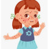

Chicken Pox
Rx:
1.Lotion Calamine-D N=1 q8h
2.Syrup Hydroxyzine N=1 q12h
3.Susp Acetaminophen N=1 w/2cc q6h
+ Tab Acyclovir 400mg N=40 2tab q6h
20mg/kg/day
نکته: کوتاه کردن ناخن و حمام روزانه جهت پیشگیری از سوار شدن عفونت باکتریال ثانویه.
نکته: اندیکاسیون مصرف آسیکلوویر: سن بالای 13سال . مصرف کورتون، نقص ایمنی، اختلالات مزمن جلدی ریوی، درمان طولانی مدت با سالیسیلات
نکته: عارضه شایعه آبله مرغان در سنین بالا پنومونی و آنسفالیت است.
1️⃣ سرخک
2️⃣ سرخجه
Bullous Pemphigoid 3️⃣
Dermatitis Herpetiformis 4️⃣
5️⃣ زرد زخم
6️⃣ درماتیت تماسی
7️⃣ واکنش دارویی
8️⃣ اریتم مولتی فرم
9️⃣ گزش حشرات
🔟 سفلیس
1️⃣1️⃣ مننگوکوکسمی
1️⃣2️⃣ کهیر پاپولر
1️⃣3️⃣ بیماری دست و پا و دهان
1️⃣4️⃣ پورپورا هنوخ شوئن لاین
1️⃣5️⃣ سندرم استیون جانسون و TEN